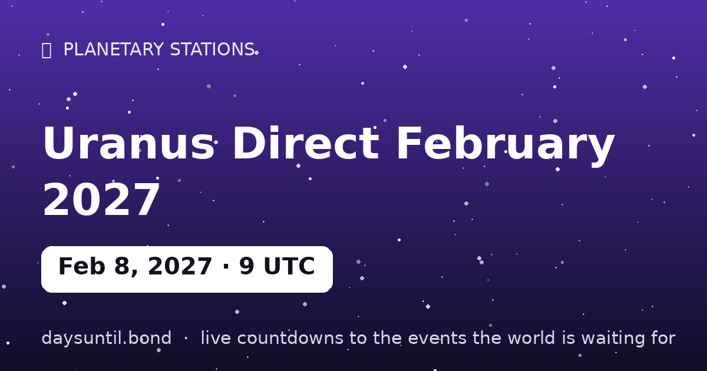

How Many Days Until Uranus Direct February 2027?
–days
–hours
–minutes
–seconds
Uranus Direct February 2027 falls on Monday, February 8, 2027.
📅 – weeks
💼 – weekdays
🛌 – weekend days
🗓️ – months (approx)
Advertisement

Quick facts
| Station moment (UTC) | February 08, 2027 · 09:28 |
|---|---|
| Zodiac position | 1°40' Gemini |
| Direction | Turning D |
| Duration of phase | ~5 months |
About Uranus Direct February 2027
Uranus stations direct on February 08, 2027 at 09:28 UTC, at 1°40' Gemini — computed to the minute with our own Keplerian ephemeris.
Uranus retrograde turns the planet of disruption and freedom inward for about five months each year — rebellion becomes review. The station is the turning point itself: the day the planet's apparent motion reaches zero before reversing. In tradition, days around a station carry the event's themes most intensely — decisions made at a station are said to set the tone for the whole season that follows.
Advertisement